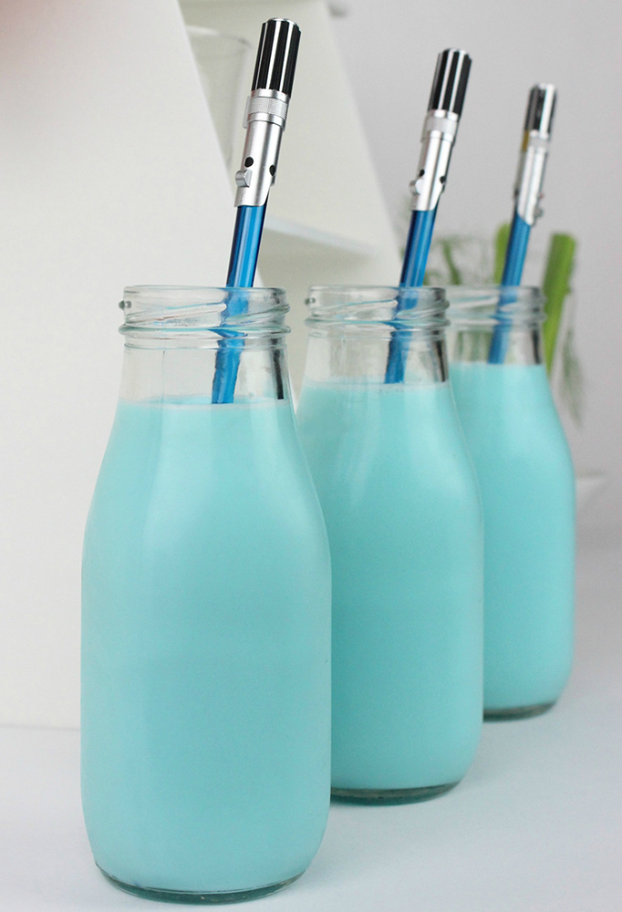

Starwars Blue Milk

Description
If you have visited Star Wars Galaxy’s Edge and have had a chance to try the iconic Blue and Green Milk, or even if you haven’t but are a huge fan of the movies and have always wanted to taste this galactic drink, you are going to love this easy to follow recipe.
Ingredients
- 2 1/2 Cups Rice Milk
- 2 Cups Frozen Pineapple Chunks
- 4 Tablespoons Coconut Flavor Syrup
- 2 Tablespoons Passion Fruit Flavor
- 1 Tablespoon Lime Flavor
- 1 Tablespoon Watermelon Flavor
- Blue Food Coloring
Preparation
- Step 1: In a blender, add the Rice Milk and the Frozen Pineapple Chunks. Blend until smooth; add more Rice Milk to get your desired smoothie texture.
- Step 2: Next, we add the flavors. If you don’t want to use flavoring for the Lime and Watermelon, you can also use freshly squeezed lime and add in pieces of delicious fresh watermelon.
- Step 3: Add Blue Food Coloring until you get that Galactic Blue color and enjoy!